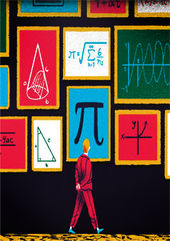
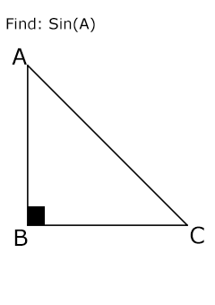
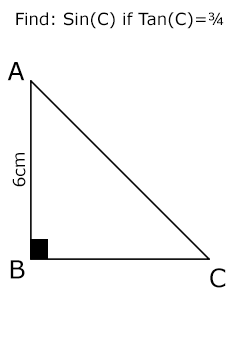
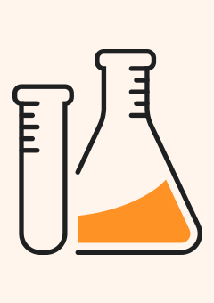
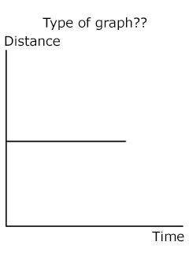
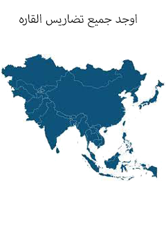
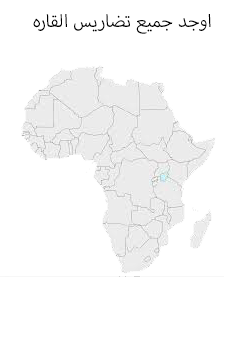
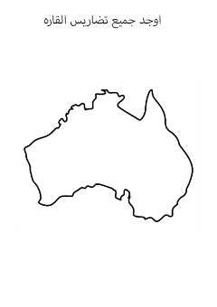

Student network
we produced this website to have any tricky questions that we got for middel 3
You can Just hover on card
Yes like this



X×Y={(2,2),(2,5)}
Find: n(Y)²
X×Y={(3,6),(3,8),(3,9),(4,6),(4,8),(4,9)}
Find: n(Y)²
Rebresent X×Y by cartisean and arrow diagrams
For any
acute angle A Tan(A)=.....
[CosA÷SinA,SinA×CosA,
SinA÷CosA,SinA+CosA]
In ∆ABC,If m(<A)=85° and SinB=CosB,Then m(<C)=[30°,45°,50°,60°]
In ∆ABC,If m(<B)=90°,Then SinA+CosC=[2SinA,2SinC,
2SinB,2CosA]
ABC is a right-angle triangle at B in which:Bc=4cm and Ac=5cm Deduce that:Sin²A - Cos²A=2Sin²A-1
ABC is a right-angle triangle,B=90° AB=BC then Sin(A)=......
If x={5,6,7} y={5,6,7} then n(x²)
f:f(x)=1-3x+x² taking x∈[-1,4] Draw and find equation of axis of symmetry and min or max.
Maths answer

What meant by: a= 3m/s²
What meant by: a=-3m/s²

Average velocity=....../Total Time
Give reason:
When two cars move with same speed and same direction it seems at rest
Complete:
Velocity type is ...... but Speed type is ......
Average Speed =....../ Total time
Define:
velocity:
Speed:
acceleration:
Car moves in constant speed 18km/h
Its speed in(m/sec.)
Why we cannot measure uniform speed regulary?
Draw concave mirror while object at distance more than D.F.L(2×Focal length)
Draw concave mirror while object at distance = D.F.L(2×Focal length)
Draw concave mirror while object at distance less D.F.L(2×Focal length) more than F.l
Draw concave mirror while object at distance less than F.l more than pole
Draw convex mirror
Science answer
ما هي التواريخ التي ذكرت في الحمله الفرنسيه؟
لماذا لم يعدم محمد كريم عند اعتقاله؟
ما هي اسباب الحمله الفرنسيه على مصر؟
اصطحاب نابليون معه مجموعه من العلماء من مختلف العلوم والفنون من حيث النتائج و الاسباب
صف موقعه ابي قير البحريه من حيث التاريخ،الاطراف،المكان والنتائج



يظهر التأثير للجبال المطله على المحيط الهادي بالعالم الجديد و يقل في اسيا دلل
لماذا تيركز السكان في المدن الكبرى؟
قارن بين السهول الوسطى و السهل الاوروبي العظيم
ما النتيجه المترتبه على وقوع انتاركتيكا اقصى جنوب الكره الارضية بالنسبه لتوزيع السكان؟
ضع صح او خطأ
تعد قاره استراليا اكبر الجزر على مستوى العالم
( )
Social studies